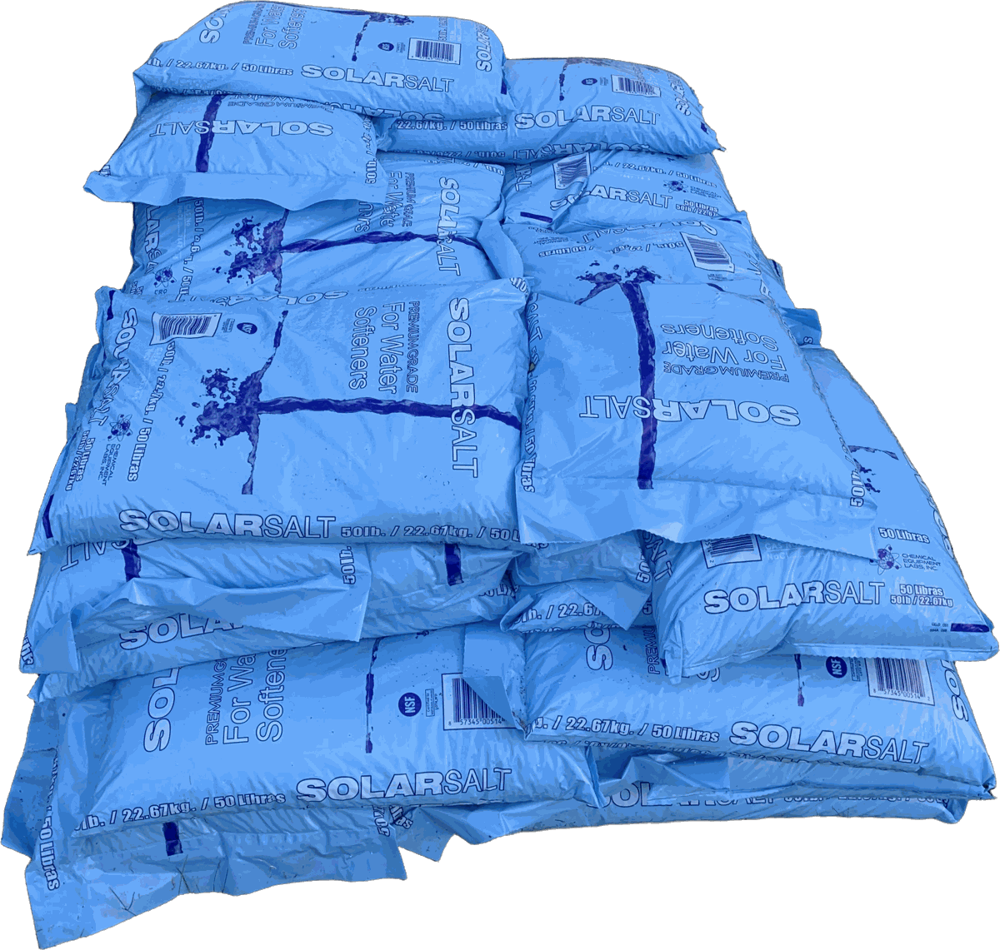

Water softeners
Hard water leaves scale on fixtures, spots on dishes, and buildup in water heaters and appliances. A softener treats water for the whole home and can help with iron stains too.
Learn more about water softeners →Woodstown, NJ · Serving southern New Jersey
Wellspring Water Solutions is a local, family-owned small business and well water specialist helping South Jersey homeowners with water softeners, acid neutralizers, PFAS, arsenic, and nitrate removal, carbon filters, reverse osmosis drinking water, and softener salt delivery.
Free in-home water test

What we do
Every home's water is different. We start by testing yours, then recommend only what it needs. We're well water specialists. From a rotten egg smell to orange iron stains, we find what's causing it and fix it. Well water treatment · PFAS, arsenic & nitrate removal
Hard water leaves scale on fixtures, spots on dishes, and buildup in water heaters and appliances. A softener treats water for the whole home and can help with iron stains too.
Learn more about water softeners →Water softeners, carbon filters, PFAS, nitrate, arsenic, and acid neutralizers.
Learn more about well water treatment →An under-sink RO system delivers great-tasting drinking and cooking water right at your kitchen tap.
Learn more about reverse osmosis →Skip hauling heavy bags. We deliver and fill up the salt tanks and service the unit.
Learn more about salt delivery →Why Wellspring
Wellspring is a local, family-owned small business. When you call, you reach a local family business — not a call center — and there are no high-pressure sales teams.

Service area
From our home base in Woodstown, we serve South Jersey and beyond, including:
Ask about water testing. Give us a call and we'll talk through what you need.
Selling a home with a well → Call 856-294-1775We'll come to your home, test your water, and walk you through what it shows — free, with no pressure.